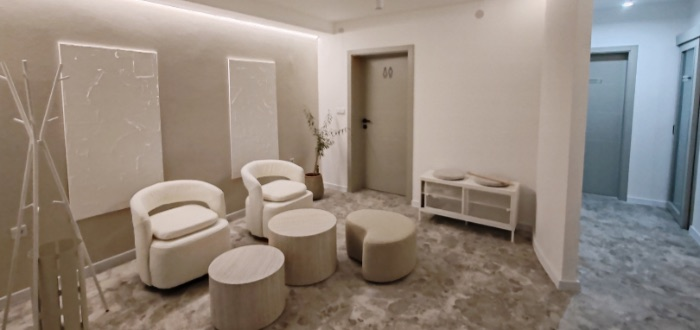
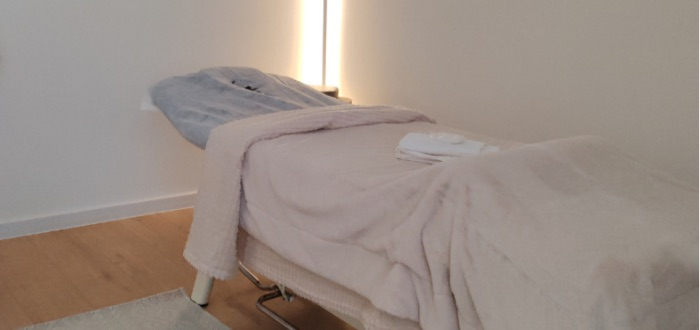
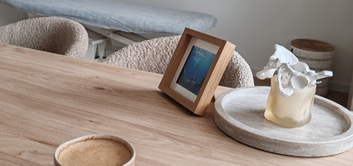
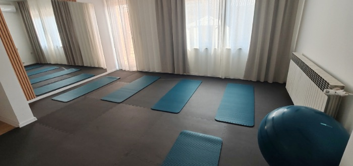
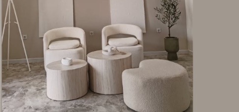
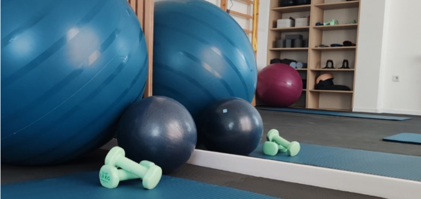

Konzultativni pregled
Prvi i ključan korak: razgovor i anamneza, procjena držanja tijela, analiza obrazaca kretanja i odabrani klinički testovi, prema indikaciji.
- 30 min · 25,00 €
- Ponesi relevantnu liječničku dokumentaciju
FizioCentar Dravinski · Prenatal & postnatal
Trudnoća mijenja tvoje tijelo. Porod donosi novo poglavlje. Zaslužuješ podršku na svakom koraku – individualnu procjenu, ciljane vježbe, manualne tehnike i edukaciju, u mirnom prostoru u Osijeku.
Pon–pet 8–20 h · sub 8–14 h

Sv. L. B. Mandića 145Osijek · mirna čekaonica u toplim tonovima


O nama
FizioCentar Dravinski specijalizirani je centar za stručnu skrb, edukaciju i podršku ženama tijekom trudnoće i nakon poroda. Naš rad usmjeren je na očuvanje zdravlja, ublažavanje tegoba, poticanje prirodnih sposobnosti tijela te siguran i postupan povratak snage, pokretljivosti i funkcionalnosti.
Stvaramo sigurno i podržavajuće okruženje u kojem tvoje tegobe shvaćamo ozbiljno, tvoje potrebe stavljamo na prvo mjesto, a svaki korak prilagođavamo upravo tebi. Kroz suradnju sa stručnjacima srodnih zdravstvenih područja ženu promatramo cjelovito – uvažavajući njezino tjelesno i emocionalno zdravlje.
Ne moraš prihvatiti bol kao neizbježan dio trudnoće ili oporavka nakon poroda.
Svaki program počinje razgovorom i procjenom, a nastavlja se tempom koji odgovara tvojoj fazi trudnoće ili oporavka.
Prvi i ključan korak: razgovor i anamneza, procjena držanja tijela, analiza obrazaca kretanja i odabrani klinički testovi, prema indikaciji.
Vježbanje prilagođeno fazi trudnoće i Fizio prenatal za mišićno-koštane tegobe.
Kvalitetan oporavak, bolja funkcija i povjerenje u vlastito tijelo – ne što brži povratak prethodnom izgledu.
od kada uključujemo trudnice u vježbanje, uz mišljenje ginekologa
od kada je moguća prenatalna masaža i EMMETT tretman
u paketu individualnog vježbanja, u trudnoći ili nakon poroda
nježni EMMETT tretman za dojenačke grčeve
Za trudnice, ali i za sve koji žele otpustiti napetost i posvetiti vrijeme vlastitom tijelu.
Nježna i ciljana masaža za trudnice od navršenog 14. tjedna, usmjerena na mišićnu napetost, osjećaj težine i nelagodu.
Tvoja pauza od svakodnevice: kombinacija manualnih pristupa s naglaskom na leđa, ruke, vrat i dekolte.
Elementi medicinske i klasične masaže s odabranim elementima EMMETT tehnike, za lakše i manje napete noge.
Čekaonica u toplim tonovima kamena, soba za tretmane i dvorana za vježbanje s ogledalima, strunjačama i loptama.



Vježbanje od 10. tjedna, a masaže i EMMETT od 14. tjedna trudnoće – uz pozitivno mišljenje ginekologa.
U tjelovježbu uključujemo žene koje su prošle prvi ginekološki pregled nakon poroda, uz pozitivno mišljenje ginekologa.
Poželjno je ponijeti svu relevantnu liječničku dokumentaciju, kako bismo dobili cjelovit uvid u tvoje stanje i potrebe.
| Ponedjeljak | 08:00 – 20:00 |
| Utorak | 08:00 – 20:00 |
| Srijeda | 08:00 – 20:00 |
| Četvrtak | 08:00 – 20:00 |
| Petak | 08:00 – 20:00 |
| Subota | 08:00 – 14:00 |
| Nedjelja | zatvoreno |